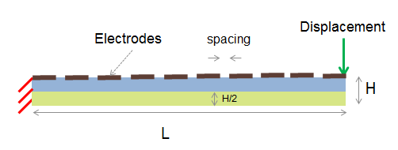
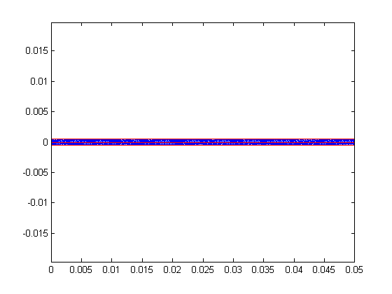
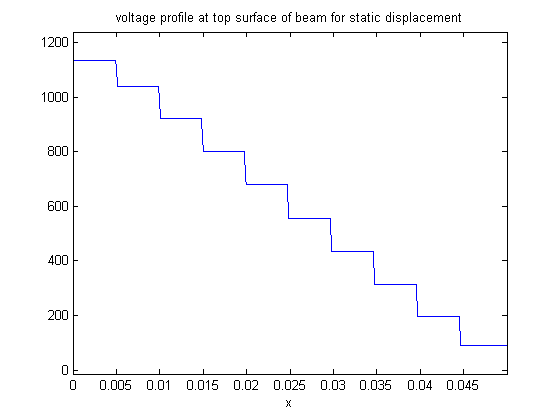

Contents
Electrode voltage profile for piezoelectric sensor
Introduction
The Reference mentioned below solved the piezoelectric problem in actuation mode. This problem solves for the same problem shown in the Reference but now in sensor mode. 10 equally spaced electrodes are placed on top as shown in the picture below. A vertical tip displacement is specified and the voltages on the electrodes are measured. This problem
- Solves the piezoelectric problem in actuation mode and measures voltages in response to a vertical displacement
- Specifies linear constitutive equations for PVDF using Symbolic Math Toolbox (R2012b or greater)
- Shows a convenient way to specify constrained (tied) BCs
- Shows a way to specify a BC value at a node

Requirements: PDE Toolbox, Helper classes for PDE Toolbox, Symbolic Math Toolbox (R2012b and greater)
References : http://www.mathworks.com/help/pde/examples/deflection-of-a-piezoelectric-actuator.html
% function piezoSensor
import pdetbplus.*; % use helper classes
Geometry
L = 50e-3; H = 1e-3; % specify boundaries p{1} = pointObject(0,0); p{2} = pointObject(0,H/2); a{1} = lineObject('wall1',p{1},p{2}); % specify electrode boundaries numElectrodes = 10; spacing = H/20; electrodeLength = (L-(numElectrodes-1)*spacing)/numElectrodes; for k=1:numElectrodes-1 p{end+1} = pointObject(k*electrodeLength,H/2); a{end+1} = lineObject(strcat('electrode',num2str(k)),p{end-1},p{end}); p{end+1} = p{end} + [spacing,0]; a{end+1} = lineObject(strcat('gapElectrode',num2str(k)),p{end-1},p{end}); end p{end+1} = pointObject(L,H/2); % boundary for final electrode a{end+1} = lineObject('electrode10',p{end-1},p{end}); p{end+1} = pointObject(L,0); a{end+1} = lineObject('free1',p{end-1},p{end}); for k=1:length(a) a{k}.leftRegion = 'nonMeshedSpace'; a{k}.rightRegion = 'beamMaterial1'; % there are two regions to the beam end a{end+1} = lineObject('separator',p{end},p{1}); a{end}.leftRegion = 'beamMaterial2'; a{end}.rightRegion = 'beamMaterial1'; topPartLength = length(a); % boundaries for lower part p{end+1} = pointObject(L,-H/2); a{end+1} = lineObject('free2',p{end-1},p{end}); p{end+1} = pointObject(0,-H/2); a{end+1} = lineObject('bottom',p{end-1},p{end}); a{end+1} = lineObject('wall2',p{end},p{1}); for k=topPartLength+1:length(a) a{k}.leftRegion = 'nonMeshedSpace'; a{k}.rightRegion = 'beamMaterial2'; end % create geometries beamTop = geometryObject('beamTop',a(1:topPartLength)); beamBottom = geometryObject('beamBottom',a(topPartLength+1:end)); beam = beamTop + beamBottom; beam.exteriorRegion = 'nonMeshedSpace'; beam = beam.initMesh('showMesh',true,'Hmax',H/5); axis('equal');
warning: Approximately 2500 triangles will be generated.
Boundary conditions
N = 3; % output dimension % instantiate boundaryConditionObject for convenient definition of BCs bc = boundaryConditionObject(beam, N); function [hval,rval,qval,gval] = bcondWall(x,y,u,t) % Dirichlet condition on the boundary rval = zeros(N,1); hval = speye(N); % u,v are zero on wall hval(3,3) = 0; qval = []; gval = []; end function [hval,rval,qval,gval] = bcondBottom(x,y,u,t) % Dirichlet condition on the boundary rval = zeros(N,1); hval = sparse(N,N); hval(3,3) = 1; % potential is 0 on bottom boundary qval = []; gval = []; end function [hval,rval,qval,gval] = bcondFree(x,y,u,t) % Dirichlet condition on the boundary rval = zeros(N,1); hval = sparse(N,N); qval = []; gval = []; end bc.add('name','free1','xyutFunction',@bcondFree); bc.add('name','free2','xyutFunction',@bcondFree); bc.add('name','wall1','xyutFunction',@bcondWall); bc.add('name','wall2','xyutFunction',@bcondWall); bc.add('name','bottom','xyutFunction',@bcondBottom); [Qmat,Gmat,Hmat,Rmat] = bc.getMatrices(); % global BC matrices so far % additional BC matrices for setting voltages on electrode to be the same Hadd = []; Radd = []; for k=1:numElectrodes electrodeName = strcat('electrode',num2str(k)); % tie voltage i.e. 3rd dimension to be same on boundary electrodeName [HaddInc,RaddInc] = bc.getGlobalHR('name',electrodeName,'type','tie','dimension',3); Radd = [Radd;RaddInc]; Hadd = [Hadd;HaddInc]; end % combine global BC matrices Hmat = [Hmat;Hadd]; Rmat = [Rmat;Radd]; % final BC for point load freeBoundaryNodes = beam.getBoundaryNodes('name','free1'); % get all boundary nodes on free1 [~,ix] = max(beam.mesh.p(2,freeBoundaryNodes)); % node with maximum y coordinate i.e. tip node pointDisplacementNode = freeBoundaryNodes(ix); % find node of interest % set a vertical displacement of -10e-3 at tip [HaddPointDisplacement,RaddPointDisplacement] = bc.getGlobalHR('type','point','nodes',pointDisplacementNode,'value',-10e-3,'dimension',2); HmatComplete = [Hmat;HaddPointDisplacement]; RmatComplete = [Rmat;RaddPointDisplacement];
Coefficients
numNodes = size(beam.mesh.p,2);
% create functions out of frequency domain piezoelectric equations
% Define piezoelectric equations (strain-charge formulation) using Symbolic Math Toolbox; To avoid errors, make % this function standalone instead of a nested function function [equations,variables] = piezoEquationsFreq(varargin) displayEquations = true; E = 0;nu = 0;G = 0;d31 = 0;d33 = 0;epsr = 0;rho = 0;s = 0;eps0 = 8.854187817620e-12; for k=1:2:length(varargin) a = varargin(k); b = varargin(k+1); if strcmp(a,'E') E = b{1}; elseif strcmp(a,'nu') nu = b{1}; elseif strcmp(a,'G') G = b{1}; elseif strcmp(a,'d31') d31 = b{1}; elseif strcmp(a,'d33') d33 = b{1}; elseif strcmp(a,'epsr') epsr = b{1}; elseif strcmp(a,'rho') rho = b{1}; elseif strcmp(a,'s') s = b{1}; elseif strcmp(a,'displayEquations') displayEquations = b{1}; end end if G == 0 G = E/(2*(1+nu)); end %% PDE input, define eq and input; % *Reserved keywords: x,y,time,ddx,ddy,d[variable]dx,d[variable]dy* % *specify the Div operator as [ddx ddy] syms ddx ddy real; % user input begins syms u v dudx dudy dvdx dvdy real; %% material constants C11 = E/(1-nu^2); C12 = C11*nu; C21=C12; C22 = C11; C66 = G; %% Linear strain tensor epsilon11 = dudx; epsilon22 = dvdy; epsilon12 = (dudy+dvdx)/2; %% stress equations Sx = C11*epsilon11 + C12*epsilon22; Sy = C21*epsilon11 + C22*epsilon22; Txy = C66*2*epsilon12; % watch out for factor of 2 for engineering strain strainStress = [Sx;Sy;Txy]; % The piezoelectric strain coefficients for PVDF % The notation of the d matrix is different from those in standard references % the "3" in dn3 below is not the z direction but is the y direction. d = [0 d31; 0 d33; 0 0]; syms E1 E2 phi dphidx dphidy xi D real; E1 = -dphidx; E2 = -dphidy; C = [C11 C12 0;C12 C22 0;0 0 C66]; e = C*d; pzeStress = -e*[E1;E2]; stressSigma = strainStress + pzeStress; % linearized stress stress = [stressSigma(1) stressSigma(3);stressSigma(3) stressSigma(2)]; permitt = eps0*epsr*eye(2); % constant stress permittivity matrix permitt = permitt - d.'*(C\d); % constant strain permittivity matrix D = (e'*[epsilon11;epsilon22;2*epsilon12] + permitt*[E1;E2]); % electric displacement equation equations = -[ddx ddy]*[stress D] + s^2*rho*[u v 0]; % the PDE if displayEquations display Problem_Equations; equations' end variables = [u v phi]; end
piezoEquations1 = @() piezoEquationsFreq('E',2e9,'nu',0.29,'G',0.775e9,'d31',2.2e-11','d33',-3e-11,'epsr',12,'s',0); % flip sign of d31 and d33 piezoEquations2 = @() piezoEquationsFreq('E',2e9,'nu',0.29,'G',0.775e9,'d31',-2.2e-11','d33',3e-11,'epsr',12,'s',0); coeff = coeffsObject(beam, N); coeff.add('region','beamMaterial1','symbolicEquationFunction',piezoEquations1); % requires Symbolic Math Toolbox coeff.add('region','beamMaterial2','symbolicEquationFunction',piezoEquations2); % requires Symbolic Math Toolbox [Kmat,Mmat,Fmat] = coeff.getMatrices('u',zeros(N*numNodes,1));
Problem_Equations
ans =
- ddy*(775000000*dudy + 775000000*dvdx) - ddx*((266*dphidy)/9159 + (4579434436073807*dudx)/2097152 + (332008996615351*dvdy)/524288)
- ddx*(775000000*dudy + 775000000*dvdx) - ddy*((332008996615351*dudx)/524288 - (2362*dphidy)/45795 + (4579434436073807*dvdy)/2097152)
(4110357605544239*ddx*dphidx)/38685626227668133590597632 + ddy*((4110357605544239*dphidy)/38685626227668133590597632 - (266*dudx)/9159 + (2362*dvdy)/45795)
Cmatrix
+- -+
| 4579434436073807/2097152, 0, 0, 5800000000000/9159, 0, 266/9159 |
| |
| 0, 775000000, 775000000, 0, 0, 0 |
| |
| 0, 775000000, 775000000, 0, 0, 0 |
| |
| 332008996615351/524288, 0, 0, 20000000000000/9159, 0, -2362/45795 |
| |
| 0, 0, 0, 0, -4110357605544239/38685626227668133590597632, 0 |
| |
| 266/9159, 0, 0, -2362/45795, 0, -957406751230359/9010865545125641773383680 |
+- -+
Fvector
+- -+
| 0, 0, 0 |
+- -+
Problem_Equations
ans =
- ddy*(775000000*dudy + 775000000*dvdx) - ddx*((4579434436073807*dudx)/2097152 - (266*dphidy)/9159 + (332008996615351*dvdy)/524288)
- ddx*(775000000*dudy + 775000000*dvdx) - ddy*((2362*dphidy)/45795 + (332008996615351*dudx)/524288 + (4579434436073807*dvdy)/2097152)
(4110357605544239*ddx*dphidx)/38685626227668133590597632 + ddy*((4110357605544239*dphidy)/38685626227668133590597632 + (266*dudx)/9159 - (2362*dvdy)/45795)
Cmatrix
+- -+
| 4579434436073807/2097152, 0, 0, 5800000000000/9159, 0, -266/9159 |
| |
| 0, 775000000, 775000000, 0, 0, 0 |
| |
| 0, 775000000, 775000000, 0, 0, 0 |
| |
| 332008996615351/524288, 0, 0, 20000000000000/9159, 0, 2362/45795 |
| |
| 0, 0, 0, 0, -4110357605544239/38685626227668133590597632, 0 |
| |
| -266/9159, 0, 0, 2362/45795, 0, -957406751230359/9010865545125641773383680 |
+- -+
Fvector
+- -+
| 0, 0, 0 |
+- -+
Solve
% matrix form of assempde() is needed because of the global BC on the % electrodes u = assempde(Kmat,Mmat,Fmat,Qmat,Gmat,HmatComplete,RmatComplete);
Post-process
% plot potential on top surface uu = reshape(u(1:3*numNodes),numNodes,[]); phixy = beam.createXYFunctionFromNodalSolution(uu(:,3)); % x,y voltage function phiTop = @(x) abs(phixy(x,H/2-eps)); % top surface voltage function figure(1);ezplot(phiTop,[0,L-eps]); title 'voltage profile at top surface of beam for static displacement';% plot voltage on top surface
Documentation of classes
See help for geometryObject lineObject pointObject coeffsObject boundaryConditionObject
More info and other examples
end